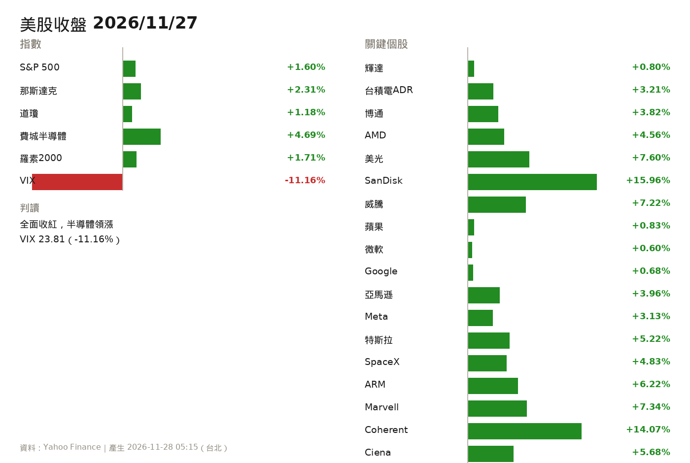
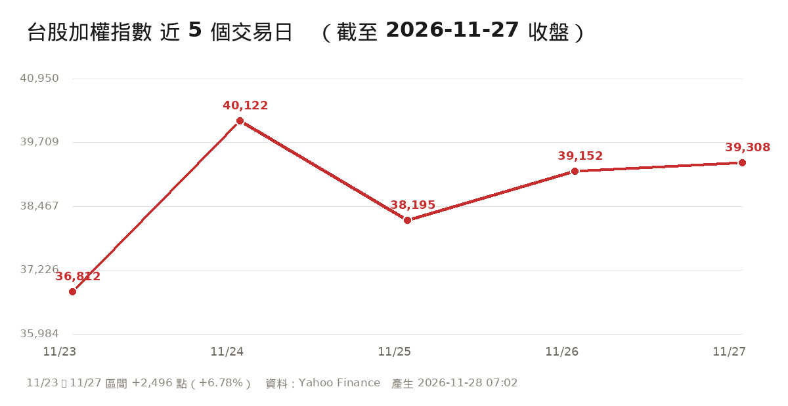
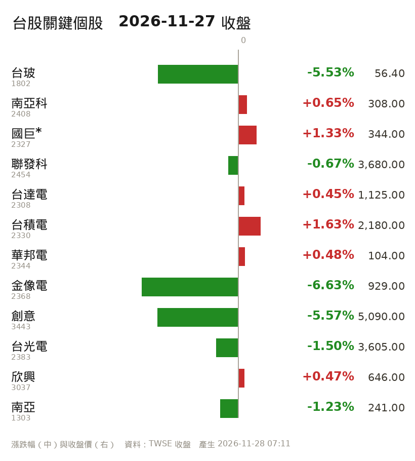
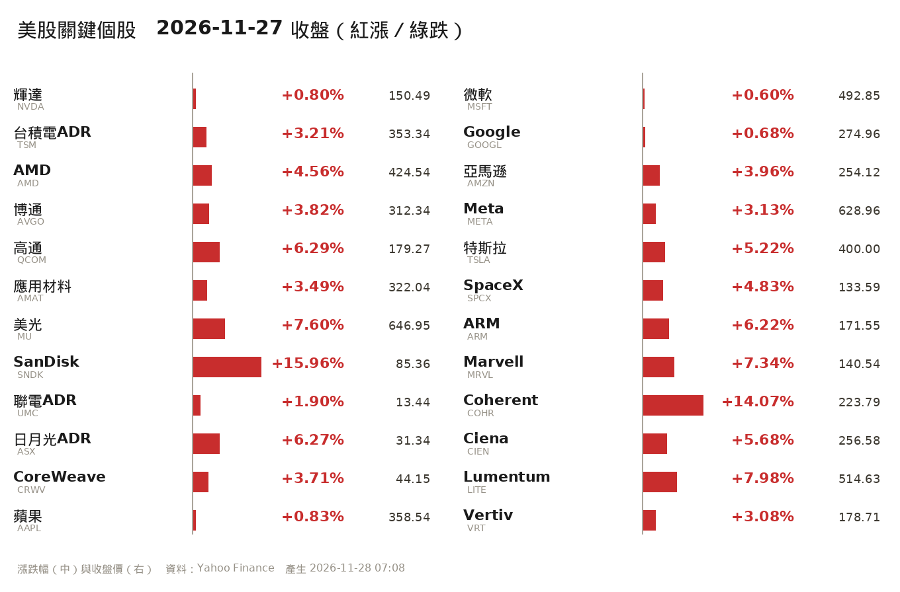
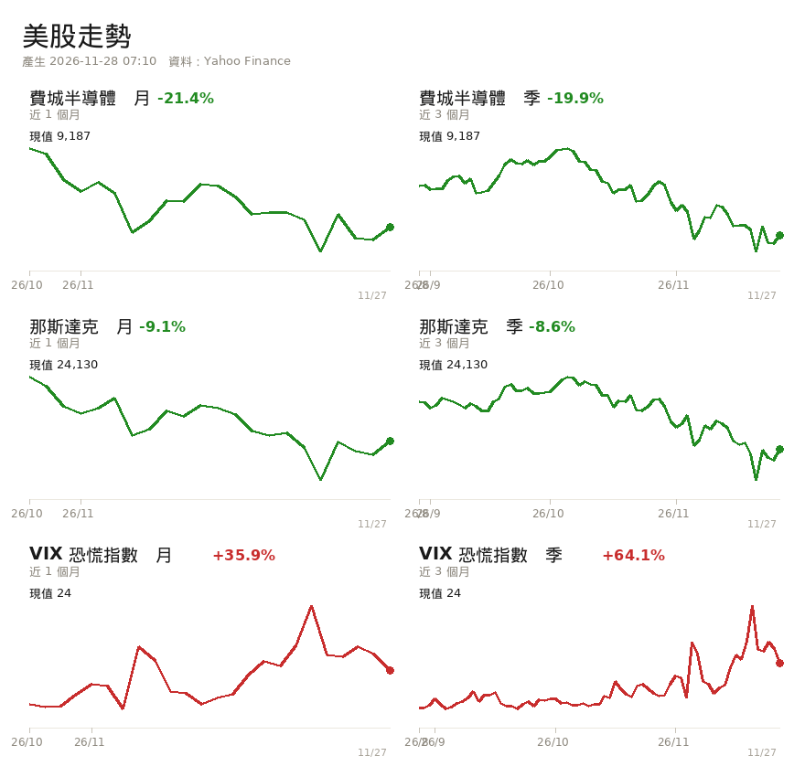
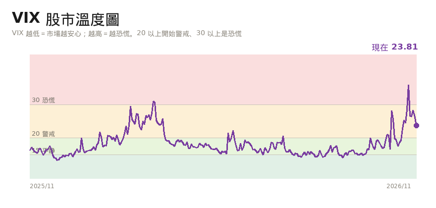
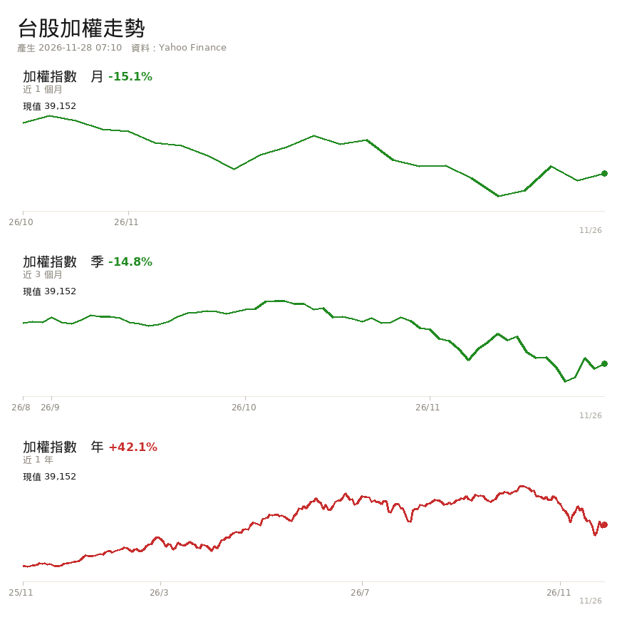

2026-11-28 投資日報2026-11-28 07:13
今日為週六，台股與美股均休市。 本報是「上週最後交易日覆盤」（台股 11/27、美股 11/27 半日盤）＋下週觀察重點。所有價格為 11/27 收盤。產出時間：2026-11-28 07:00（台北）
重點提醒｜Emmy（持續中）
來源：
財經頻道/Emmy追劇時間/Emmy重點提醒追蹤.md。未解除就會每天出現；判定解除當天標「過期」，隔天起不再列出。
- E1 輝達 NVDA／黃仁勳 真正風險不是技術洩密，是「走私晶片＋長期遊說晶片禁令」的國安問題。已持續 16 天。⬆️ 惡化：11/27 費半 +4.69%，輝達只 +0.80%（150.49）、明顯落後；同日外媒報導Blackwell 晶片被發現安裝在上海資料中心（合規問題），加上停止對東南亞四國出貨（E12）。12/1 眾院閉門、12/2 法務長、12/3 參院公開作證。解除條件：12/1、12/3 國會程序結束且無新增出口管制或刑事程序。
- E2 台股／美股大盤 民主黨期中選舉大勝 → AI 資料中心與科技業監管收緊的恐慌，是 11/05-11/06 崩盤主因。已持續 20 天。➡️ 未變：BIS 132 頁新規仍生效、無新增也無轉鬆；11/27 美股大漲是「跌深反彈」，不是監管轉向。解除條件：具體監管法案送進國會並過關，或政策明確轉向寬鬆。
- E3 台股／美股大盤 「熊市要來了嗎、該獲利了結嗎」——她事前提示了這一波下殺。已持續 27 天。⬇️ 緩解（未達解除）：11/27 加權 +156.27（+0.40%）收 39,308.08，週線 +3,274.79（+9.09%）；但年線 39,551 仍未收回、成交縮到 6,816 億、櫃買 -1.4%，且外資連 10 賣（累計 5,004.71 億）。解除條件：指數站回季線且外資轉為連續買超。
- E4 油價／布蘭特原油 中東戰火推升油價 → 通膨壓力 → 股市下跌。已持續 30 天。⬇️ 緩解（未達解除）：布蘭特 90.84（-3.98%）、WTI 83.08，已貼近 90 門檻但仍在 90 上方；OPEC+ 11/29 開會（明天）是關鍵。解除條件：布蘭特回落至 90 美元以下且中東衝突降溫。
- E5 記憶體族群／8299 群聯 大摩一次降 6 檔記憶體、目標價腰斬，群聯 2,588→1,357 降為「劣於大盤」。已持續 17 天。⬇️ 緩解（兩邊不同步）：美股記憶體強彈——SanDisk +15.96%、美光 +7.60%、威騰 +7.22%、希捷 +7.90%；但台股 8299 群聯 11/27 逆勢 -3.07% 收 1,580、外資仍賣，南亞科僅 +0.65%、華邦電 +0.48%。解除條件：NAND 現貨報價重新轉強且外資對群聯轉為買超，或大摩回補評等。
- E7 AI 硬體成本／毛利率見頂 輝達 Q4 毛利率指引 71~72%，低於本季 74.8%；採購承諾大幅增加，成本往上游擠。已持續 10 天。➡️ 未變：毛利率指引不變；11/27 記憶體與光通訊大漲是報價／跌深反彈，不是成本改善；採購承諾仍未以 10-Q 原文核對。解除條件：輝達毛利率回升至 74% 以上且採購承諾增速放緩，或記憶體現貨報價連續 2 個月回落。
- E8 跨資產同步下跌／流動性緊縮 股、油、金同一天一起跌，代表「保證金追繳、到處變現」，不是資金輪動。已持續 7 天。⬇️ 緩解（未達解除）：VIX 23.81（-11.16%）已跌破 25；黃金 3,668.5（+3.75%）、股市同漲，不再是「一起跌」；但美 10 年殖利率升到 4.936%（前 4.848%）、5 年 4.746%，利率端沒穩。解除條件：VIX 回落至 25 以下、黃金與股市不再同步下跌、美 10 年殖利率止穩。
- E9 AI 晶片出口許可調查擴散（輝達＋超微） 調查戰線從「走私」擴大到「許可審查」與「會計揭露」；超微遭 Hunterbrook 做空報告狙擊。已持續 6 天。➡️ 未變：AMD 11/27 +4.56% 未再創低、做空報告未被監管駁回、國會聽證未舉行；但許可制已實際卡住出貨（E12），戰線仍在擴大。解除條件：國會聽證結束且無新一輪管制、超微與輝達不再創低，或做空報告被監管駁回。
- E10 政策／政治市：暴漲暴跌 這一波下跌與反彈都由「政治決定」驅動——川普 11/23 發文要求輝達回聘；台股靠國安基金＋限空令 3.0＋維持率降至 120% 拉抬。漲跌理由不在基本面，代表政策一轉彎就會反向。已持續 4 天。⬆️ 惡化：11/27 台股 +156 點全靠台積電尾盤 1 萬張買盤（單檔貢獻 283.8 點，超過大盤漲點），扣掉這盤週五其實是黑的；同日外資台指期淨空單 107,503 口、連 3 日創歷史新高；美股大漲 4.69% 但台指期夜盤反而 -197 點收 39,153。解除條件：政策工具退場後指數仍站穩季線 3 日，且外資連續買超 3 日。
- E11 301 關稅／台灣稅率 USTR 11/25 公布「工業產能過剩」301 調查結果：台灣協議稅率最高 15% 不疊加、中國最高 20%、共 14 國；川普另稱兩年後對進口晶片課 200%。已持續 2 天。➡️ 未變（提案階段）：11/27 台股僅 +0.40%，利多效應遞減；稅率仍是提案，2027/1/25 公聽會才定案，備案最高 25%。解除條件：台美協議簽署且稅率定案不再加碼，或正式生效後 3 個月台廠接單與毛利未受影響。
- E12 AI 伺服器出貨／出口許可制（東南亞四國） 輝達要求戴爾、美超微暫停對馬來西亞、新加坡、泰國、印尼出貨搭載其晶片的 AI 伺服器；美方 11/19 生效的新規要求這五國（含巴西）先進晶片出口須先取得許可，區域雲端業者 90 天內（約 2027/2/17）要證明客戶不含受限實體。已持續 2 天。➡️ 未變（第一次定價完成）：11/27 美股半日盤給出的答案是**「硬體原諒、輝達不原諒」**——SOX +4.69%、戴爾 +6.70%，但 NVDA 只 +0.80%；台指期夜盤 -197 點、群聯 -3.07%。驗證點仍是 12/10 前台廠 11 月營收。解除條件：輝達與代工夥伴恢復對四國出貨，或取得許可且台廠 11 月營收未見遞延（12/10 前公布）。
🚨 警報狀態
- 排程全部正常（今早 07:00 檢查）：
危機警報 盤中每5分（次次開盤 11/30 09:00）、危機警報 影片檢查22:20（今晚 22:20）、2454 跌破3830 提醒（11/30 09:00）、盤前跨市場預警 06:40（11/30 06:40）都 enabled，沒有停用。 - L3 仍未處理：2454 聯發科。你的條件「跌破 3,830 全出」在 11/25 觸發，三個交易日都在線下：11/25 觸發、11/26 收 3,705、11/27 收 3,680（-0.67%）。現在成本 3,895.25、4 股、未實現 -5.53%（-861 元）。下週一開盤它會再提醒一次。回「已處理」或「不處理」，我就停掉當日通知並寫進交易日誌（11/25 那次你回的是「不處理」，我記在
alert_ack.json，所以 11/26、11/27 只發一次）。 - 今天沒有盤前預警檔：06:40 那支排在週一～五，週六不執行（正常）。
- 今早 06:20 的粉專抓取失敗，已修好並補跑：
fb_watch.py缺websocket-client（今天 04:00 自動更新後套件不見），已裝回並在 07:2x 重跑，8 個粉專取回 3 則股市相關貼文（見「消息面」頁）。
📑 上週週報（W47，11/16～11/22）紅綠清單摘要
最新一份週報是 2026-W47（11/22 產出，彙整 11/16～11/22 共 9 支影片、50 條看多／71 條危機）。新的一份明晚（11/29 21:00）才產出，所以先看這份——但請注意它涵蓋的是「崩盤那週」，不含 11/24 之後的大反彈。
- 🔴 看多 18 項（12 檔個股／族群），前三名：2330 台積電 8 次（Vera Rubin 點名、南科 3nm、入股 Anthropic）、台股大盤 7 次（國家隊守 4 萬、融資大減、前三季稅前淨利 +86.43%）、輝達 NVDA 4 次（Q3 營收 1,158 億 +103%、本益比 16.21）。
- 🟢 危機 41 項，前三名：融資／維持率 7 次（11/20 單日 -491 億）、台股大盤 4 次（11/16 防線 37,837、11/19 破年線）、利率／升息 4 次（10Y 5.12~5.15%、12 月升息機率 >9 成）。
- 兩邊都提到的主題＝真正的分歧點：融資（一綺說「洗乾淨了」、宏爺說「離追繳只剩一根中長黑」）、輝達（紅 4 綠 2）、記憶體（紅 1 綠 2）。
- 本週已被驗證的：① 「融資洗乾淨」→ 融資從 6,000 億掉到 4,302 億（兌現）② 「12 月升息 >9 成」→ Reuters 說市場「幾乎完全定價升息」（兌現）③ 「外資空單在高檔，一旦平倉就是反彈火種」→ 還沒兌現，空單反而創新高 107,503 口。
⓿ 先回答三個問題：消息面 vs 已發生
一、黃仁勳復職了，輝達危機是不是結束了？
| 項目 | 狀態 | 說明 |
|---|---|---|
| 黃仁勳 11/23 復職執行長，當天 NVDA +31.5%（125.53 → 165.05） | 🟥 已發生 | 那斯達克歷史級單日漲幅，指數當天也寫下 2025/4 以來最佳單日 |
| 復職後股價回吐：11/27 收 150.49，距 11/23 高點 -8.8% | 🟥 已發生 | 「走前跌、走掉跌、回來照跌」，人事不是股價的解藥 |
| 11/27 費半 +4.69%，輝達只 +0.80% | 🟥 已發生 | 同一個族群裡被明顯放生，這是最直接的資金投票 |
| 外媒報導 Blackwell 晶片被發現安裝在上海資料中心 | 🟧 消息面 | 媒體報導、公司未回應；但方向與 E1（走私／合規）一致 |
| 12/1 眾院閉門、12/2 法務長、12/3 參院公開作證 | ⏳ 還沒發生 | 這是「要求出席」的日期，依最終安排為準 |
怎麼用：人事已定案（已發生），但國安程序才剛開始（還沒發生）。所以輝達現在是「個股風險」而不是「族群風險」——族群照漲，它自己漲不動。這正是你手上沒有 NVDA、只有 0050 間接受影響的處境。
二、12 月是降息還是升息？（本週最容易被搞錯的一件事）
| 項目 | 狀態 | 說明 |
|---|---|---|
| 10 月核心 PCE 3.3%（三年新高）、headline 3.8% | 🟥 已發生 | 通膨沒有往 2% 走 |
| Q3 GDP 由 3.4% 上修到 4.3% | 🟥 已發生 | 經濟過熱，不是衰退 |
| 市場幾乎完全定價 12 月升息（宏爺引 97.8%） | 🟥 已發生（定價） | Reuters：「almost fully pricing in a Federal Reserve rate hike in December」 |
| 美 10 年殖利率 4.936%（前一日 4.848%）、5 年 4.746% | 🟥 已發生 | 股漲、債跌＝市場在替升息定價，不是降息 |
| 「12 月一定會升」 | 🟧 預估 | 定價 ≠ 決議，FOMC 前還有 11 月就業與 CPI |
怎麼用：這是你 11 月受傷的核心背景——市場不是在等降息，是在等升息。在這種環境，本益比高的成長股反彈是「技術性」的，不是「資金面」的。所以反彈要當反彈做，不要當回升抱。
三、外資連 10 賣，賣完了沒？台股週一要不要補漲？
| 項目 | 狀態 | 說明 |
|---|---|---|
| 外資 11/27 賣超 296.28 億、連 10 賣、累計 5,004.71 億；今年賣超約 3.5 兆 | 🟥 已發生 | 賣超金額是近日最少，但「少賣」不等於「回頭買」 |
| 外資台指期淨空單 107,503 口、連 3 日創歷史新高 | 🟥 已發生 | 現貨賣、期貨空，兩邊同向 |
| 美股費半 11/27 +4.69% | 🟥 已發生 | 台股週一有補漲的條件 |
| 台指期夜盤反而 -197 點收 39,153 | 🟥 已發生 | 這是台灣自己先否決了補漲 |
| 「下週外資賣壓會減輕」（啟發投顧郭憲政：台積電領先過高、央行守 33） | 🟧 觀點 | 分析師說法，沒有因果證明 |
怎麼用：不要用「美股大漲」推論「台股一定補漲」。台指期夜盤跌 197 點是同一晚的答案：週一開高有可能，但「開高走低」的機率不低。你手上 0050 只有 60 股、成本 93.88、現價 92.40，還沒解套，不需要為了搶反彈加碼。
① 一句話結論
市場溫度 20／100（偏冷，前一日 12 寒冬）——這是「反彈」不是「回升」：美股靠記憶體與光通訊噴出（費半 +4.69%、SNDK +15.96%），但輝達只 +0.80%、外資連 10 賣、期貨空單 107,503 口創新高、台指期夜盤還跌 197 點，台股的反彈是台積電最後一盤 1 萬張撐出來的。
🎒 JNA-202 PRO 快取單肩包：目前最低 2,800（BigGo／飛比 全新），目標 1,500，還差 1,300，未達標。
② 國際與美股
11/27（五）美股半日盤，美東 13:00 收盤（台灣 11/28 凌晨 02:00）
| 指數 | 收盤 | 漲跌 | 漲跌% |
|---|---|---|---|
| 道瓊工業 | 50,774.94 | +591.99 | +1.18% |
| S&P 500 | 7,297.49 | +114.71 | +1.60% |
| 那斯達克 | 24,129.50 | +543.70 | +2.31% |
| 費城半導體 | 9,186.71 | +411.85 | +4.69% |
| 羅素 2000 | 2,750.30 | +46.24 | +1.70% |
| VIX 恐慌指數 | 23.81 | -2.99 | -11.16% |

上漲主因（已發生）：感恩節後第一個交易日＋黑色星期五，資金回頭買「跌深 AI」。S&P 週線 +5.6%、那指 +6.68%、道瓊 +5.46%——S&P 是 2025/4 以來最佳單週。成交量 109.7 億股。紐約交易所上漲／下跌家數 3.25 : 1。
關鍵個股（11/27 收盤）
| 個股 | 收盤 | 漲跌% | 一句判讀 |
|---|---|---|---|
| 輝達 NVDA | 150.49 | +0.80% | 全族群最弱；上海資料中心報導＋東南亞停出貨壓著 |
| 台積電 ADR TSM | 353.67 | +3.31% | 跟上半導體反彈，但落後費半 |
| AMD | 424.54 | +4.56% | 做空報告後未再破低 |
| 博通 AVGO | 312.34 | +3.82% | 客製化晶片跟著 AI 反彈 |
| 高通 QCOM | 179.27 | +6.29% | 手機晶片＋記憶體漲價轉嫁想像 |
| 應用材料 AMAT | 322.04 | +3.49% | 設備股跟漲，資本支出沒轉弱 |
| 美光 MU | 646.95 | +7.60% | NAND／DRAM 報價預期轉強，本波主角 |
| SanDisk SNDK | 85.36 | +15.96% | 跌深（11 月 -50%）＋記憶體反彈，S&P 500 漲幅第一 |
| 威騰 WDC | 292.11 | +7.22% | 儲存三雄同步 |
| 聯電 ADR UMC | 13.50 | +2.35% | 成熟製程跟漲，幅度溫和 |
| 日月光 ADR ASX | 31.43 | +6.58% | 先進封測受惠 AI 需求 |
| CoreWeave CRWV | 44.15 | +3.71% | 反彈但仍是弱勢族群（CDS 1,314bp 的隱含違約率 68%） |
| 蘋果 AAPL | 358.54 | +0.83% | 記憶體漲價的唯一受益者（美國市占 50%→57%） |
| 微軟 MSFT | 492.85 | +0.60% | 巨頭防守型上漲 |
| Google GOOGL | 274.96 | +0.68% | 同上 |
| 亞馬遜 AMZN | 254.12 | +3.96% | 黑五消費數據撐腰 |
| Meta META | 628.96 | +3.13% | 巨頭補漲 |
| 特斯拉 TSLA | 400.00 | +5.22% | 站回 400，風險偏好回升的溫度計 |
| SpaceX SPCX | 133.59 | +4.83% | 馬斯克宣布擴大兒童股票捐贈計畫；未達 ±5% 門檻 |
| ARM | 171.57 | +6.23% | 客製化晶片線漲幅大於 NVDA（+0.80%）＝資金從 GPU 移向 ASIC |
| Marvell MRVL | 140.54 | +7.34% | 同上，ASIC／網通雙題材 |
| Coherent COHR | 223.85 | +14.10% | 光通訊最強，資料中心內部連線需求 |
| Ciena CIEN | 257.10 | +5.89% | 光通訊第二層受益 |
| Lumentum LITE | 514.63 | +7.98% | 光通訊三雄同步 |
| Vertiv VRT | 178.93 | +3.21% | 散熱電源跟漲，幅度最小＝機房擴建仍被懷疑 |
| SK 海力士（000660.KS） | 韓股 | 盤中 +5.28% | 收盤未取得（報導時快照，非收盤價，原幣韓元） |
上漲的部分（別只看跌）
11/27 是全面上漲日，24 檔關鍵個股全數收紅，沒有下跌的。最強的是記憶體（SanDisk +15.96%）與光通訊（Coherent +14.10%）；最弱的是輝達（+0.80%）、微軟（+0.60%）、Google（+0.68%）。弱的是「巨頭與 GPU」，強的是「記憶體與光通訊」——這個結構比指數漲幾點重要。
跨市場
| 項目 | 數值 | 變動 |
|---|---|---|
| 美 10 年期殖利率 | 4.936% | +8.8 bp |
| 美 5 年期殖利率 | 4.746% | +8.6 bp |
| 美元指數 DXY | 104.01 | +0.33% |
| 布蘭特原油 | 90.84 | -3.98% |
| WTI 原油 | 83.08 | -0.72% |
| 黃金 | 3,668.5 | +3.75% |
| 美元／台幣 | 32.94～32.98 | 台幣升值約 0.6%（央行連二日守 33 內） |
| VIX | 23.81 | -11.16% |
判讀：股漲、金漲、油跌、殖利率漲。這是「風險偏好回來＋通膨預期沒退」的組合——不是全面寬鬆，別把它讀成「資金行情重啟」。
③ 台股覆盤（11/27，週五）

盤勢節奏
開 39,168.47、最高 39,495.41（+343.6 點）、最低 38,890.53（翻黑）、終場 39,308.08（+156.27、+0.40%）。最後一盤台積電以 1 萬張買盤從 2,160 拉到 2,180，單檔貢獻 283.8 點——比大盤漲點還多。扣掉這一盤，週五現貨其實是黑的。
| 項目 | 數值 | 說明 |
|---|---|---|
| 加權指數 | 39,308.08 | +156.27（+0.40%），連二日收紅 |
| 成交金額 | 6,816.10 億 | 較前一日 8,453 億明顯萎縮（量縮反彈） |
| 週線 | +3,274.79（+9.09%） | 11 月最大單週反彈，市值回升 10.7 兆至 128.8 兆 |
| 上漲／下跌／持平（集中） | 438 / 551 / 97 | 跌多於漲＝賺指數賠差價 |
| 上漲／下跌（含櫃買） | 711 / 1,166 | 櫃買 -1.4%（285.77） |
| 漲停／跌停（集中） | 20 / 5 | 含櫃買為 35 / 9 |
| 台積電 2330 | 2,180（+35、+1.63%） | 尾盤 1 萬張，盤中最高也 2,180 |
| 台幣 | 32.94（升 1.2 分） | 連二日守 33 元之內 |
| 年線 | 39,551 | 仍未收回 |
| 距 60 日線 | -11.3% | 乖離仍深 |
拖累大盤的：聯發科 2454 -0.67%（-12.3 點）、創意 3443 -5.57%（-11.7 點）、國泰金、智邦、金像電 -6.63%、台玻 -5.53%、群聯 8299 -3.07% 收 1,580。矽光子整片倒：波若威 -3.66%、華星光 -3.41%、汎銓 -3.53%、聯亞跌停 1,395——注意這與美股光通訊 +14% 完全相反，台股光通訊沒跟上美股，是下週要驗的背離。
盤後公布（已發生）：主計總處上修 2026 年經濟成長率至 13.28%、2027 年估 6.51%。
💰 三大法人與籌碼（2026-11-27）
| 法人 | 買賣超（億元） |
|---|---|
| 外資 | -296.3 |
| 投信 | +85.2 |
| 自營 | -2.0 |
| 合計 | -213.0 |
外資買超 TOP 10
| 代號 | 名稱 | 張數 |
|---|---|---|
| 2882 | 國泰金 | +19,902 |
| 2891 | 中信金 | +17,634 |
| 2887 | 台新新光金 | +16,802 |
| 5876 | 上海商銀 | +15,577 |
| 2603 | 長榮 | +12,914 |
| 2884 | 玉山金 | +8,722 |
| 2317 | 鴻海 | +8,216 |
| 5871 | 中租-KY | +7,239 |
| 2353 | 宏碁 | +7,107 |
| 2633 | 台灣高鐵 | +6,693 |
外資賣超 TOP 10
| 代號 | 名稱 | 張數 |
|---|---|---|
| 2890 | 永豐金 | -43,961 |
| 2892 | 第一金 | -37,921 |
| 2886 | 兆豐金 | -27,460 |
| 2412 | 中華電 | -24,273 |
| 2303 | 聯電 | -17,426 |
| 2409 | 友達 | -13,864 |
| 2618 | 長榮航 | -12,052 |
| 2355 | 敬鵬 | -10,302 |
| 2330 | 台積電 | -8,711 |
| 2883 | 凱基金 | -8,275 |
投信買超 TOP 10
| 代號 | 名稱 | 張數 |
|---|---|---|
| 2890 | 永豐金 | +35,386 |
| 2892 | 第一金 | +32,550 |
| 2412 | 中華電 | +22,766 |
| 2886 | 兆豐金 | +21,203 |
| 2303 | 聯電 | +18,671 |
| 2618 | 長榮航 | +10,074 |
| 2883 | 凱基金 | +9,339 |
| 1216 | 統一 | +7,541 |
| 2105 | 正新 | +7,334 |
| 1102 | 亞泥 | +5,684 |
投信賣超 TOP 10
| 代號 | 名稱 | 張數 |
|---|---|---|
| 2882 | 國泰金 | -20,933 |
| 2887 | 台新新光金 | -18,579 |
| 2603 | 長榮 | -15,513 |
| 5876 | 上海商銀 | -15,065 |
| 2891 | 中信金 | -14,892 |
| 2880 | 華南金 | -11,257 |
| 5871 | 中租-KY | -10,731 |
| 2884 | 玉山金 | -10,425 |
| 2633 | 台灣高鐵 | -10,130 |
| 9904 | 寶成 | -5,455 |
自營買超 TOP 5
| 代號 | 名稱 | 張數 |
|---|---|---|
| 2886 | 兆豐金 | +1,223 |
| 2883 | 凱基金 | +1,188 |
| 2880 | 華南金 | +1,161 |
| 2002 | 中鋼 | +1,070 |
| 2412 | 中華電 | +898 |
自營賣超 TOP 5
| 代號 | 名稱 | 張數 |
|---|---|---|
| 1802 | 台玻 | -2,018 |
| 2409 | 友達 | -1,481 |
| 2313 | 華通 | -1,226 |
| 2303 | 聯電 | -1,103 |
| 6949 | 沛爾*-創 | -1,072 |
散戶槓桿（融資融券）
- 融資餘額 4,302 億（-43 億）
- 融券 184,790 張（+11,169 張）
政府股市政策（持續中）
- 2026-11-09 金管會 借券賣出上限 30% → 3%、融券保證金 90% → 130% 每日盤中借券賣出量由「前 30 日均量 30%」降至 3%；融券保證金成數由 90% 提高至 130%；並放寬補繳擔保品（零股、基金、海外股票可抵繳）。
- 2026-11-20 金管會 收盤跌逾 3.5% 個股，隔日禁止平盤下放空；借券上限 3% → 1% 針對當日跌幅超過 3.5% 的股票，次一交易日禁止平盤以下放空；借券賣出上限再降至 1%。
- 2026-11-24 金管會 融資維持率 130% → 120%，11/24 前追繳紀錄全部取消 11/24 起整戶擔保維持率門檻降至 120%；11/24 前因低於 130% 被追繳者，追繳通知取消、擔保品不處分。上次降至 120% 為 1998 年。
- 2026-11-21 國安基金 國安基金進場（新聞報導，未見正式公告逐字） 授權執行秘書視情況動用資金護盤。此項為媒體報導，官方公開資訊尚待確認，日報標示為「消息面」。
資料來源：TWSE（三大法人 BFI82U／個股 T86／融資融券 MI_MARGN） 抓取 2026-11-28 07:01
- 我的持股：兆豐金（2886） 外資 -27,460 張、投信 +21,203 張、自營 +1,223 張（土洋對作最激烈的一檔）；中鋼（2002） 自營 +1,070 張。
④ 頻道影片重點（11/26～11/27，影片觀點）
六台最新一集：宏爺（11/27）、晨星（11/27）、鈔錢部署（11/27 精華）、一綺（11/26）、財女珍妮（11/26）、Emmy（EP.179，11/17；EP.180 仍抓不到）。今日無新片，沿用昨晚 22:00 歸檔內容。
🔴 加碼／看多訊號
- 301 台灣 15% 不疊加、2,231 項豁免、無人機 15% 全球最低；232 半導體未定案但 MOU 已鎖「配額內零關稅、配額外 15% 不疊加」——宏爺講股 ⏱[10:31]
- 電子資訊對美出口前三季 1,805 億美元、暴增 72.5%、市占 22.8%——宏爺講股 ⏱[11:51]
- 融資從 6,000 億以上洗到 4,344 億，散戶小台空單 2.56%，「行情總在絕望中誕生」——宏爺講股 ⏱[03:26]
- 台幣收 32.935、升 1.2 分，連二日守 33 內（她說這是轉強三條件之一）——晨星 DayStar ⏱[05:00]
- 緯穎 +6.37%：Q3 營收 4,346 億（+62.9%）、EPS 41.46，靠財報不靠輝達——晨星 DayStar ⏱[03:45]
- 華通 +9.82%，外資買 3,500 張、投信買 2,400 張＝法人真的在買——晨星 DayStar ⏱[07:35]
- 0050 跌破年線那個月多扣一筆：策略三回測 366 萬 → 3,251 萬（8.9 倍），「2 萬、3 萬也可以，有加就是贏」——鈔錢部署 ⏱[01:34]／[03:22]
🟢 危機／減碼訊號
- CoreWeave 5 年 CDS 1,314bp、隱含違約率 68%、債券殖利率近 18%——宏爺講股 ⏱[05:16]
- 外資期貨空單 10.6 萬口（收盤實際 10.75 萬口創新高）「像一把刀懸在台股頭上」——宏爺講股 ⏱[04:00]
- 12 月升息一碼機率 97.8%、核心 PCE 3.3%；輝達「走前跌、走掉跌、回來照跌」兩段各 -27%——宏爺講股 ⏱[08:06]
- 對美出口 87% 押電子＝「健身只練右手」；德銀估雲端資本支出增速明年見頂——宏爺講股 ⏱[16:58]
- 櫃買 -1.4%（285.77）、上漲 438 家／下跌 551 家＝典型「賺指數賠差價」——晨星 DayStar ⏱[00:19]
- 外資 -296.28 億連 10 賣（累計 5,004.71 億）；投信買超 535→231→85 億逐日遞減——晨星 DayStar ⏱[10:56]
- 輝達暫停對馬星泰印出貨：訂單會延遲、不會消失，真風險在中長期東南亞建置放緩——晨星 DayStar ⏱[01:57]
- 昨天漲停股今天全回吐（金像電 -6.63%、群聯 -3.07%、智邦 -4%）；台玻 -5.53% 破所有均線——晨星 DayStar ⏱[08:25]
📊 情緒溫度計
用逐字稿實算危機詞（崩、暴跌、危機、空單、違約、泡沫…共 20 個）與看多詞（大漲、反彈、買超、加碼、創高…共 17 個）：
| 集數 | 逐字稿字數 | 危機詞 | 看多詞 | 看多／危機比值 |
|---|---|---|---|---|
| 宏爺講股 11/27 | 4,710 | 11 | 20 | 1.82 |
| 晨星 DayStar 11/27 | 7,419 | 4 | 28 | 7.00 |
| 一綺聊股 11/26 | 6,904 | 14 | 29 | 2.07 |
| 鈔錢部署 11/27（精華） | 1,259 | 2 | 11 | 5.50 |
語氣判讀：晨星最樂觀（7.0）、宏爺最糾結（1.82）。宏爺那集的危機詞幾乎都集中在「外資空單、CoreWeave 違約、升息」三件事上，看多詞則集中在「關稅、出口、能源」這種中長線題材——同一集裡短線看空、長線看多，這也是為什麼他會說「像一把刀懸在頭上」卻又喊「國運在此一戰」。晨星則是「指數紅、個股綠」的客觀描述，語氣偏中性偏多。整體：溫度從上週的「恐慌」回到「猶豫」，還沒到「貪婪」。
🔵 中長期展望（產業趨勢）
- 定價權正在從外資轉向內資：外資持股 47%、今年倒貨 3.2 兆，長期結果是台股波動變大、殖利率型 ETF（你的 00713）相對抗跌——一綺聊股。
- 對美出口 87% 押電子＝結構性單邊風險：電子資訊前三季對美 1,805 億美元、市占 22.8%，好處是 AI 紅利吃滿，壞處是任何一條監管線（E2／E9／E11／E12）都會直接打到出口——宏爺講股。
- 雲端資本支出增速明年見頂（德銀）：AI 硬體的「成長率」高點可能在 2026，2027 要改成看「現金流能不能撐」——宏爺講股。
- 記憶體漲價會往終端擴散：HBM 吃掉 DRAM 產能，手機／PC 的 LPDDR 供給被排擠，下游品牌（Motorola 市占 12%→8%）先受傷，上游（MU／SK 海力士／三星記憶體）受益——FinGuider 引用 Counterpoint。
- 東南亞建置放緩是「延遲」不是「消失」（晨星）：訂單會遲到，但 AI 資料中心的區域布局不會取消，12/10 台廠 11 月營收是第一個驗算點。
📇 頻道摘要（六台最新一期）
完整內容已同步到
財經頻道/頻道摘要.md（六台四欄：名稱／內容／評論／最近貼文），網站上另有一頁「頻道摘要」。今日六台皆無新片，沿用最新一期。
Emmy追劇時間 2026/11/17（EP.179）：黃仁勳下台、輝達震撼彈 — 內容見上方重點提醒；最近貼文（11/28）為桃園市長選舉，非股市，不收。
一綺聊股 2026/11/26：台股漲近千點！反彈要賣股票嗎？— 🔴 301 關稅不確定性解除、低軌衛星（昇達科／華通漲停）；🟢 外資連 9 賣、台積電被當 ATM；結論「消息面反彈、不是資金面反轉」。
宏爺講股 2026-11-27：台灣國運，在此一戰 — 🔴 301／232 稅率、對美出口 72.5%、融資洗到 4,344 億；🟢 CoreWeave 違約率 68%、外資空單 10.7 萬口、12 月升息 97.8%。
晨星 DayStar Brilliant 2026-11-27：台股收紅、個股一片綠 — 🔴 最後一盤拉 198 點（成交 698 億）、台幣守 33、緯穎 +6.37%；🟢 櫃買 -1.4%、上漲 438／下跌 551、投信買超逐日遞減（535→231→85 億）。
財女珍妮 2026/11/26：落底訊號出現了嗎？— 🔴 爆量長下影線＝籌碼換手、儲蓄率回升 4.1%；🟢「我不認為這是 V 型反轉」、核心 PCE 3.3%、信用利差擴大。
鈔錢部署–華視優選 2026-11-27（精華）：0050 定期定額、不定額誰贏 — 🔴 跌破年線那個月多扣一筆，366 萬 → 3,251 萬；🟢 每月要擠 6 萬多數人做不到、不要融資加碼。
📺 一綺聊股最近一期投資標的
2026年11月26日 台股漲近千點！反彈要賣股票嗎？外資還在砍！低軌衛星華通、昇達科突然拉漲停
🟢 可以留意／建倉的標的
- 日月光投控（3711） 花旗給目標價 908 元，理由是 2027 年先進封測營收有機會翻倍，成長來自 GPU 與客製化 ASIC 多家 AI 客戶（不是只依賴輝達）
- 低軌衛星族群 FCC 有條件通過 SpaceX 部署最多 100 萬顆「軌道運算衛星」（太空資料中心），昇達科、華通、燿華、兆赫、啟碁齊攻漲停
- 華通（2313） 今天漲停 168 元，但她明確說「消息面居多」，且上方層層壓力（AI 圖表標 212.5）
- 穩懋（3105） 本土投顧給目標價 650 元，看好衛星通訊＋光通訊需求，EPS 年增近四成
🔵 中長期展望（產業趨勢）
- 長期（2027）：台灣在先進製程（2 奈米量產、亞利桑那 3 奈米）與先進封測的獨占地位沒變；但「外資持股 47%、今年倒貨 3.2 兆」說明定價權正在從外資轉向內資，這會讓台股波動變大、殖利率型 ETF 相對抗跌。
🔴 危機／要避開
- 避開 台積電（2330） 10/6 創新高以來外資只有 11/11 買超一天，11/26 再提款 1.8 萬張（11/27 再賣 8,711 張）
- 避開 台玻（1802） 外資昨天才買超 2.4 萬張，隔天直接倒 8.1 萬張、投信也站賣方，隔日沖主力痕跡明顯（11/27 再跌 5.53%）
- 大盤 外資連賣、累計提款破 5,000 億，反彈時外資照砍；三大法人合計仍是賣超
- 金融股 外資賣超第二名永豐金、兆豐金／第一金也在前五，土洋對作（投信買、外資賣）
- 反彈性質 她自己的定義是「短線反彈」，理由是反彈靠 301 關稅 15% 不疊加這條消息，不是外資回頭
🚫 不要做的事（避坑）
- 不要追漲停（11/27 集中市場仍有 20 家漲停，多為小型股與題材股）
- 不要在反彈時把「消息面」當「資金面」加碼
- 不要把台積電尾盤拉抬當成趨勢翻多
📌 本集結論
- 今天是消息面反彈，不是資金面反轉：關稅不確定性解除→跌深股噴出，但外資連賣、期貨空單創高，反彈的「買方」是投信、自營與散戶，不是外資。
- 台積電是這波外資提款機：10/6 以來只買超一天。
- 低軌衛星是「許可上限」不是「出貨訂單」：100 萬顆是 FCC 允許的最大值，時程排到 2038 年。
⑤ 我的持股動態（11 檔，11/27 收盤）
| 名稱（代號） | 股數 | 成本 | 11/27 收盤 | 市值 | 損益 | 損益% | 比重 |
|---|---|---|---|---|---|---|---|
| 聯發科（2454） | 4 | 3,895.25 | 3,680.00 | 14,720 | -861 | -5.53% | 27.1% |
| 兆豐金（2886） | 311 | 25.50 | 47.05 | 14,633 | +6,702 | +84.51% | 26.9% |
| 元大台灣高息低波（00713） | 200 | 46.58 | 59.75 | 11,950 | +2,634 | +28.27% | 22.0% |
| 元大台灣50（0050） | 60 | 93.88 | 92.40 | 5,544 | -89 | -1.58% | 10.2% |
| 雷虎（8033） | 20 | 202.25 | 116.00 | 2,320 | -1,725 | -42.65% | 4.3% |
| 中光電投控（3718） | 40 | 103.12 | 40.20 | 1,608 | -2,517 | -61.02% | 3.0% |
| 漢翔（2634） | 20 | 67.95 | 48.45 | 969 | -390 | -28.70% | 1.8% |
| 訊聯基因（4160） | 27 | 114.07 | 33.50 | 904 | -2,175 | -70.63% | 1.7% |
| 中鋼（2002） | 50 | 29.28 | 17.25 | 862 | -602 | -41.09% | 1.6% |
| 大樹（6469） | 11 | -6.18 | 50.60 | 557 | +625 | 已回本 | 1.0% |
| 大魯閣（1432） | 20 | 15.25 | 13.55 | 271 | -34 | -11.15% | 0.5% |
- 總現值 54,338 元｜總成本 52,770 元｜總損益 +1,568 元｜報酬率 +2.97%
- 扣掉兆豐金後：現值 39,706 元｜成本 44,840 元｜損益 -5,134 元｜報酬率 -11.45%
- 大樹（6469）成本 -6.18 是除權息累計扣減後的負成本＝已回本（不是欠錢、也不是資料錯），所以損益% 無意義，標「已回本」。
- 跌超過 -7% 停損線的有 7 檔（-7% 是紀律的無條件出場線）：大魯閣 -11.15%、漢翔 -28.70%、中鋼 -41.09%、雷虎 -42.65%、中光電投控 -61.02%、訊聯基因 -70.63%，加上大樹（已回本不計）。這 6 檔合計未實現 -7,443 元，佔總部位 13.7%。
- 唯一還在賺的防禦部位：兆豐金 +84.51%（+6,702）、00713 +28.27%（+2,634）——你的報酬率是靠這兩檔撐成正的。
🎒 比價追蹤：JNA 包款（目標 1,500）
更新 11-28 07:07｜資料 BigGo／飛比。JNA-202 PRO 官方是「單肩包」。
| 品項 | 全新最低 | 福利品 | 二手 | 距目標 |
|---|---|---|---|---|
| JNA-202 PRO 快取單肩包 | 2,800 | 2,940 | — | 還差 1,300 |
未達標：目前最低仍高於 1,500 元，繼續追。
⑥ 觀察清單與法人動向
台股觀察清單（13 檔）
| 代碼 | 名稱 | 現價 | 漲跌 | 成交量 |
|---|---|---|---|---|
| 2330 | 台積電 | 2,180.0 | +1.63% | 37,646 張 |
| 2308 | 台達電 | 1,125.0 | +0.45% | 14,470 張 |
| 2454 | 聯發科 | 3,680.0 | -0.67% | 8,532 張 |
| 3443 | 創意 | 5,090.0 | -5.57% | 957 張 |
| 2383 | 台光電 | 3,605.0 | -1.50% | 4,313 張 |
| 2408 | 南亞科 | 308.0 | +0.65% | 32,903 張 |
| 3037 | 欣興 | 646.0 | +0.47% | 30,750 張 |
| 1802 | 台玻 | 56.4 | -5.53% | 141,222 張 |
| 1303 | 南亞 | 241.0 | -1.23% | 63,975 張 |
| 2327 | 國巨* | 344.0 | +1.33% | 40,985 張 |
| 2368 | 金像電 | 929.0 | -6.63% | 10,071 張 |
| 2344 | 華邦電 | 104.0 | +0.48% | 57,559 張 |
| 3661 | 世芯-KY | 3,595.0 | -3.75% | 2,405 張 |
外資動向（買賣超，單位：張）
| 代碼 | 名稱 | 今日 | 連續 | 近 5 日累計 | 近 10 日累計 |
|---|---|---|---|---|---|
| 2408 | 南亞科 | +4,582 | 買超 2 天 | +8,087 | +17,154 |
| 2344 | 華邦電 | +3,938 | 買超 2 天 | +5,876 | +27,317 |
| 1802 | 台玻 | -3,017 | 賣超 2 天 | -91,868 | -191,775 |
| 2330 | 台積電 | -8,711 | 賣超 12 天 | -68,954 | -127,977 |
| 1303 | 南亞 | -375 | 賣超 5 天 | -19,780 | -63,121 |
| 2327 | 國巨* | -3,561 | 賣超 1 天 | +9,570 | +17,424 |
| 2308 | 台達電 | -2,084 | 賣超 4 天 | -7,338 | -20,014 |
| 2454 | 聯發科 | -325 | 賣超 10 天 | -5,743 | -14,013 |
| 2368 | 金像電 | -692 | 賣超 4 天 | -5,170 | -8,529 |
| 2383 | 台光電 | -138 | 賣超 5 天 | -5,022 | -3,440 |
| 3037 | 欣興 | -2,595 | 賣超 2 天 | -4,524 | -8,562 |
| 3443 | 創意 | -31 | 賣超 1 天 | +1,062 | +1,144 |
| 3661 | 世芯-KY | -208 | 賣超 4 天 | -1,045 | -1,610 |
法人資料截止：2026-11-27（TWSE T86）｜報價時間 13:30:00
重點：台積電外資連 12 賣、聯發科連 10 賣；記憶體（南亞科、華邦電）是唯二「買超 2 天」的，11/27 台股記憶體反而收紅——與美股同步的只有這兩檔。
🧮 ETF 共識持股（跨發行商）
| 股票 | 名稱 | 持有 ETF 檔數 | 哪幾檔 | 合計權重 |
|---|---|---|---|---|
| NVDA | NVIDIA | 5 | QQQ、SMH、SOXX、VGT、XLK | 61.8% |
| AVGO | Broadcom | 5 | QQQ、SMH、SOXX、VGT、XLK | 26.6% |
| AMD | Advanced Micro Devices | 5 | QQQ、SMH、SOXX、VGT、XLK | 25.2% |
| MU | Micron | 5 | QQQ、SMH、SOXX、VGT、XLK | 21.2% |
| TXN | Texas Instruments | 5 | QQQ、SMH、SOXX、VGT、XLK | 15.6% |
| INTC | Intel | 5 | QQQ、SMH、SOXX、VGT、XLK | 14.0% |
| AMAT | Applied Materials | 5 | QQQ、SMH、SOXX、VGT、XLK | 12.0% |
| LRCX | Lam Research | 5 | QQQ、SMH、SOXX、VGT、XLK | 11.0% |
| QCOM | Qualcomm | 4 | SMH、SOXX、VGT、XLK | 12.0% |
| ADI | Analog Devices | 4 | SMH、SOXX、VGT、XLK | 11.4% |
| KLAC | KLA | 4 | SMH、SOXX、VGT、XLK | 10.6% |
| MRVL | Marvell | 4 | SMH、SOXX、VGT、XLK | 8.0% |
12 檔符合 ≥4 檔 ETF 共識
- 本期換股：SOXX 刪除 TSEM。
- 這是「被動資金需求」的參考，不是買進建議：ETF 常在漲完才納入、跌完才刪除。
- 台股 ETF 共識還沒接（投信持股頁是 JS 載入），這張表只有美股。
⑦ SWOT
| 面向 | 內容 |
|---|---|
| S 優勢 | 兆豐金 +84.51%、00713 +28.27% 撐住整體報酬率 +2.97%；總部位僅 5.4 萬、現金充足，本波下跌沒有被迫賣出；11 檔裡沒有單一持股超過 27%（紀律上限 20%，2454 超標 7 個百分點需處理） |
| W 弱勢 | 扣掉兆豐金報酬率 -11.45%；6 檔違反 -7% 停損線（合計 -7,443 元）；2454 聯發科 4 股佔 27.1% 且已跌破自訂 3,830 條件 3 個交易日未處理 |
| O 機會 | 美股記憶體（SNDK +15.96%、MU +7.60%）與光通訊（COHR +14.10%）噴出，台股對應族群（2408、2344、4977、6442）尚未跟上；若 12/10 前台廠 11 月營收證實「訂單只是延遲」，是最乾淨的驗證點 |
| T 威脅 | 外資連 10 賣＋期貨空單 107,503 口創新高（現貨與期貨同向）；12 月升息幾乎完全定價、10Y 殖利率 4.936%；今日九合一選舉結果＋11/30 MSCI 生效＝下週一兩個開盤變數；E12（東南亞停出貨）對台廠 11 月營收的遞延還沒反映 |
⑧ 財經行事曆
- 今日（11/28）已移除 1 筆過期事件（
calendar_2026-11.json），月曆與 Markdown 已同步重畫。 - 今日 11/28（六）：九合一選舉投票日——依中選會公告，今晚開票。已發生（程序），結果屬「⏳ 還沒發生」；對台股是「政策延續性」的定價，週一開盤會反映。這不是投資建議，只是提醒波動來源。
- 11/29（日）：OPEC+ 會議——布蘭特 90.84 貼近 90 門檻，E4 解除與否看這場。
- 11/30（一）：MSCI 11 月調整收盤後生效（台股＋美股）——台股尾盤 13:00-13:30 會出現大量換股單。MSCI 台股權重調升至 29.01%（已發生）。
- 12/1（二）眾院約談黃仁勳（閉門）／12/2 法務長／12/3 參院公開作證——「要求出席」的日期，不是確定行程，依最終安排為準。
- 12/10（四）前：上市櫃 11 月營收——先看 2330、2454、8299。這是 E12（東南亞遞延）第一個可驗證的數字。
- 12/16（三）：12 月台指期結算——結算前後三天不要追價。
- 12/24（四）美股平安夜半日盤、12/25（五）聖誕節休市——外資放假，台股由內資主導、量會縮。
⑨ 紀律提醒（比對 ~/vault/交易紀律.md）
與昨晚紅綠清單衝突的三處（照實寫，不美化）：
- 第五條「大盤跌破季線且外資連 3 日大賣 → 總持股降到 3 成以下」已成立但沒執行：外資連 10 賣（遠超 3 日）、加權距 60 日線 -11.3%（季線下方）。你的持股仍是滿倉 11 檔、現金約 25 萬。這條不是「再看一下」，是條件已滿足。
- 第三條「跌破進場價 -7% 無條件賣出」有 6 檔違反：雷虎 -42.65%、中光電投控 -61.02%、訊聯基因 -70.63%、中鋼 -41.09%、漢翔 -28.70%、大魯閣 -11.15%。合計未實現 -7,443 元。其中 3718、4160、6469 是上櫃股，流動性更差，越晚處理越難賣。
- 你自己訂的 2454 條件「跌破 3,830 全出」已觸發 3 個交易日（11/25 觸發、11/26 3,705、11/27 3,680），未執行。這是唯一「你自己寫下明確價位」的規則，破了它，其他紀律都會跟著鬆。
下週一開盤前該做的三件事（照順序）：
- ① 2454 聯發科 4 股：3,680 已在條件價下 150 元（-3.9%）。要嘛執行、要嘛明確改成新條件（例如「站回 3,830 才留」），不要讓它變成第三個「再等等」。
- ② 單一持股上限 20%：2454 佔 27.1%，超過紀律上限；兆豐金 26.9% 也超過（但它是防禦部位、+84.51%，性質不同，可以註記例外）。
- ③ 不要在 11/30 尾盤（13:00-13:30）做決定：MSCI 生效日尾盤換股單會讓價格失真，要買要賣都在早盤做。
本週不要做的事：不追記憶體反彈（美股 SNDK +15.96% 已經噴完一天）、不因為「費半 +4.69%」就加碼 0050（台指期夜盤已先跌 197 點）、不攤平 2454。
⑩ 資料來源與限制
- 台股報價：
http://127.0.0.1:8787/api/quotes（TWSE MIS，最後成交 11/27 13:30）。休市日顯示為最後交易日收盤，非即時。 - 台股收盤／成交量／漲跌家數：TWSE
MI_INDEX（type=ALL）；成交金額 6,816.10 億為集中市場（含零股／盤後為 6,946 億，本報採集中市場口徑）。 - 三大法人／個股買賣超／融資融券：TWSE
BFI82U、T86、MI_MARGN，資料日 2026-11-27。 - 美股：Nasdaq quote API（
secondaryData／primaryData交叉核對）＋ Reuters／AP／CNBC／Motley Fool 新聞結算值。道瓊 50,774.94、S&P 7,297.49、那指 24,129.50、費半 9,186.71 四項與中央社、AP 完全一致。個股收盤以本報表格為準；us_stocks_chart.py走 Yahoo，少數個股漲跌與表格有小差異（例：Coherent 表格 +14.10%、圖上 +14.07%，Ciena 表格 +5.89%、圖上 +5.68%）。 - 跨市場：Yahoo（^TNX、^FVX、DX-Y.NYB、BZ=F、CL=F、GC=F、TWD=X、^VIX），資料日 11/27。
- 限制一：SK 海力士（000660.KS）沒有取得 11/27 收盤價，表中只寫報導時快照（盤中 +5.28%），不是收盤。
- 限制二：今天是週六，台股與美股都沒有新交易；本報所有「今日」字樣指的是資料日 11/27。
- 限制三：盤前跨市場預警（06:40）週六不執行，所以沒有那一節，不是檔案遺失。
- 限制四：今早 06:20 粉專抓取失敗（缺 websocket-client，已修復並補跑）；「消息面」頁只有 3 則股市相關貼文，其餘 5 個粉專今日貼文與股市無關。
- 限制五：Emmy 今日新貼文為桃園市長選舉（政治），依規則不收；她最新股市集數仍是 EP.179（11/17），EP.180 會員 cookie 問題未解。
- 限制六：頻道內容一律標「影片觀點」，不是我的建議；我沒有對任何一檔給目標價。
- 產生時間：2026-11-28 07:00（台北）
紀律
- 市場溫度 20／100（偏冷）（前一日 12 寒冬）——還是「不要摸底」的區間，不是「可以進場」的區間。
- 外資連 10 賣、台指期淨空單 107,503 口連 3 日創新高：大盤漲跌不是重點，外資還沒回頭才是重點。
- 台積電最後一盤 1 萬張把指數拉紅（貢獻 283.8 點 > 大盤漲點 156 點）——這叫護盤，不叫轉強。
- 你手上 2454 聯發科 4 股：3,680 < 3,830（你的條件價）第 3 個交易日，還沒處理。
- 週一（11/30）MSCI 生效，尾盤 13:00-13:30 換股單湧出，不要在尾盤追價或砍價。
走勢

漲停（20 檔）
建通 2460、耀登 3138、環科 2413、鼎固-KY 2923、今皓 3011、攸泰科技 6928、吉祥全 2491、兆赫 2485、事欣科 4916、百一 6152、冠西電 2466、楠梓電 2316、富威電力 6994、三集瑞-KY 6862、大眾控 3701、華通 2313、宏碁遊戲-創 6908、群光 2385、GOGOLOOK 6902、太極 4934
跌停（5 檔）
沛爾*-創 6949、正峰 1538、漢康-KY創 7827、台揚 2314、力銘 3593
判定方式：收盤＝當日最高／最低且漲跌幅約 ±10%（TWSE 收盤資料 2026-11-27）。
重點
美股（11/27 半日盤）
- 道瓊 50,774.94 +1.18%、S&P 7,297.49 +1.60%、那指 24,129.50 +2.31%、費半 +4.69%；S&P 週線 +5.6% 為 2025/4 以來最佳。
- 記憶體／儲存領漲：SanDisk +15.96%、美光 +7.60%、威騰 +7.22%、希捷 +7.90%。
- 光通訊全面噴出：Coherent +14.10%、Lumentum +7.98%、Ciena +5.89%。
- 輝達只 +0.80%，明顯落後費半（上海資料中心＋東南亞停出貨）。
- VIX 23.81（-11.16%）跌破 25；但 10 年殖利率升到 4.936%。
台股（11/27）
- 加權 39,308.08 +156.27（+0.40%），成交 6,816 億（縮），週線 +3,274.79（+9.09%）。
- 台積電 2,180（+35）尾盤 1 萬張；櫃買 -1.4%、上漲 438／下跌 551 家＝賺指數賠差價。
- 外資 -296.28 億（連 10 賣、累計 5,004.71 億），投信 +85.19 億（連 4 買，金額逐日遞減）。
- 壓盤：聯發科 -0.67%（-12.3 點）、創意 -5.57%（-11.7 點）、金像電 -6.63%、台玻 -5.53%。
- 週一 11/30 MSCI 生效＋今日九合一選舉結果，是下週開盤兩個變數。
美股

上漲：SanDisk +15.96%、Coherent +14.07%、Lumentum +7.98%、美光 +7.60%、Marvell +7.34%、高通 +6.29%、日月光ADR +6.27%、ARM +6.22%、Ciena +5.68%、特斯拉 +5.22%、SpaceX +4.83%、AMD +4.56%、亞馬遜 +3.96%、博通 +3.82%、CoreWeave +3.71%、應用材料 +3.49%、台積電ADR +3.21%、Meta +3.13%、Vertiv +3.08%、聯電ADR +1.90%、蘋果 +0.83%、輝達 +0.80%、Google +0.68%、微軟 +0.60%
下跌：無（24 檔全數收紅；圖上漲跌與日報表格以表格為準，兩者來源不同）


台股

- 年線 39,551 仍未收回（11/27 收 39,308）。
- 距 60 日線 -11.3%（乖離仍深）。
- 週線 +9.09%，是 11 月最大單週反彈；但外資同週賣超 2,818 億。
⓿ AI 鏈健康分數（季等級，看財報不看新聞）

AI 鏈健康分數：40／100（轉弱） 季等級，從「付錢的人」開始看。
積木邏輯：加權 54 分，但底座最弱環節只有 0 分，總分上限壓到 40 分。
錢的源頭：四大 CSP 近 4 季營運現金流 1.12 倍於資本支出，自由現金流 +707 億美元；最近一季 -264 億（已開始透支）；淨現金（現金−負債）-4,423 億美元。
- 記憶體雙雄 +372%（YoY） → 很健康（100 分，權重 5%）
- 南亞科／華邦電月營收，記憶體循環的溫度計
- AI 晶片三雄 +79%（YoY） → 很健康（100 分，權重 10%）
- 輝達／博通／AMD 營收，代表 AI 伺服器與加速器的實際出貨
- 台積電月營收 +59.7%（YoY） → 很健康（100 分，權重 10%）
- AI 需求最直接的成績單，每月 10 日公布；由正轉負是第一個警訊
- CSP 資本支出 +114%（YoY） → 很健康（90 分，權重 10%）
- 訂單的源頭。年增率高＝硬體需求旺；但要看上面三項，錢是自己出還是借的
- AI 服務商現金流 -129 億美元 → 警訊（0 分，權重 10%）
- CoreWeave／Oracle 的自由現金流；負越大代表靠借錢擴張
- AI 服務商槓桿 淨負債 / TTM EBITDA 7.6 倍 → 警訊（15 分，權重 15%）
- CoreWeave／Oracle／Nebius 的槓桿是 CSP 的十倍以上（CRWV 12.4x、ORCL 4.3x、NBIS 20.7x）。底座垮了，上面的訂單會一起消失
- CSP 債務增速 +110%（一年） → 警訊（0 分，權重 15%）
- 總負債一年內從 279B 增加到 586B。借錢買機器最直接的證據，增速越快風險越高
- CSP 現金流支撐 4 季 OCF / capex 1.12 倍｜最近一季 -264 億 → 健康（65 分，權重 15%）
- 四大雲端業者自己賺的錢夠不夠付資本支出。近 4 季 OCF 6,670 億、資本支出 5,962 億 → 自由現金流 +707 億美元；低於 1 倍就要靠現金或舉債
- CSP 槓桿水位 淨負債 442B / EBITDA 691B = 0.64 倍 → 很健康（85 分，權重 10%）
- 資產負債表扛不扛得住。低於 1 倍＝獲利一年就能還清；3 倍以上＝景氣一反轉就吃緊
台股警示燈號（日等級）


每兩週更新一次，下次更新：2026-12-15。期間每日晨報都沿用本頁。
一眼看完
- 市場溫度 37／100（偏冷）
- 注意以上 6 項、危險 0 項 → 橙燈 減碼
- 動作：減碼到 3 成，只留核心持股
① 市場溫度（每個成分各自五燈）
- 量能 1.03 倍均量 → 53 分 正常 ｜ 成交量是最近 20 天平均的幾倍，錢多就熱
- 乖離 -2.9%（距 60 日線） → 35 分 安全 ｜ 指數離 60 天平均線多遠，漲太遠就是過熱
- 融資 5,366 億（20 日 -17.6%） → 0 分 很安全 ｜ 散戶借錢買股的餘額，增加＝追高、減少＝籌碼變乾淨
- 廣度 上漲 526 / 下跌 491 → 53 分 正常 ｜ 今天上漲家數對下跌家數，多數股票漲才是健康
- VIX 19.30 → 53 分 正常 ｜ 美國恐慌指數，越高越危險（反向計分）
- 外資 -968 億（5 日） → 18 分 很安全 ｜ 外資近 5 天買賣超，一直買＝偏熱、一直賣＝偏冷
② 退場訊號（每項獨立五燈）
藍＝很安全、綠＝安全、黃＝正常、橙＝注意、紅＝危險。
| 指標 | 什麼情況叫危險 | 現在 | 燈號 |
|---|---|---|---|
| 溫度計 | 80 分以上＝過熱 | 37 分 | 安全 |
| 融資水位 | 5,000 億以上＝危險 | 5,366 億 | 注意 |
| 融資變化 | 20 日 +15% 以上＝危險 | -17.6% | 很安全 |
| 外資現貨 | 5 日賣超 1,000 億以上＝危險 | 5 日 -968 億 | 注意 |
| 外資期貨 | 淨空單 10 萬口以上＝危險 | 99,573 口 | 注意 |
| 台幣匯率 | 一週貶逾 1 元＝危險 | 32.94（5 日 -0.17） | 安全 |
| 美 10 年殖利率 | 5% 以上＝危險 | 5.15%（5 日 +29bp） | 注意 |
| 量價結構 | 上漲量縮／下跌量增＝危險 | 上漲＋量縮（沒人接棒） | 注意 |
| 乖離 | 距 60 日線 +10% 以上＝危險 | -2.9%（距 60 日線） | 安全 |
| 景氣燈號 | 由紅燈轉黃紅燈以下＝危險 | 紅燈（41 分） | 注意 |
| 出口 | 年增率轉負＝危險 | +61%（2026-09） | 很安全 |
③ 基本面燈
- 出口：2026-10 出口 967.6 億美元（連 36 紅）。出口是領先指標，訂單旺→電子股營收後面會好。
- 景氣燈號：2026-09 41 分、紅燈（連 10 紅）。這是同時指標，確認現在很熱。
基本面是地板，不是天花板。 基本面最熱的時候，通常是股價最危險的時候。
④ 名詞解說（文字版）
市場溫度的六個成分
- 市場溫度：六項指標各打 0～100 分再加權平均 → 越高＝市場越熱，追高危險；越低＝越冷，但可能是機會
- 量能：今天成交金額 / 最近 20 天平均 → 高（1.5 倍以上）＝資金瘋狂、易過熱；低（0.7 倍以下）＝人氣退潮
- 乖離：指數離 60 天平均線還有多遠（%） → 高（+10% 以上）＝漲太遠易回檔；低（-10% 以下）＝跌太深易反彈
- 融資：散戶借錢買股票的餘額（億元） → 高＝槓桿多、一跌就斷頭；低＝籌碼乾淨、但也代表散戶跑光
- 廣度：上漲家數 /（上漲＋下跌）家數 → 高（80% 以上）＝全面上漲、偏過熱；低（20% 以下）＝全面恐慌
- VIX：美股恐慌指數（波動率） → 低（15 以下）＝平靜；高（30 以上）＝恐慌，通常在崩盤中
- 外資：外資近 5 個交易日買賣超金額 → 高（買超 1,500 億以上）＝熱錢湧入；低（賣超）＝資金外逃
退場訊號的 11 項
- 溫度計：市場溫度分數 → 80 分以上＝過熱，追高風險大
- 融資水位：全體融資餘額 → 5,000 億以上＝槓桿太高，一跌就斷頭
- 融資變化：融資餘額 20 日變化 → 20 日 +15% 以上＝散戶集體追高
- 外資現貨：外資在集中市場的買賣超 → 5 日賣超 1,000 億以上＝大錢在跑
- 外資期貨：外資台指期未平倉淨空單 → 10 萬口以上＝外資放空避險，看跌
- 台幣匯率：新台幣兌美元 → 一週貶逾 1 元＝資金外流（股匯雙殺）
- 美 10 年殖利率：美國 10 年期公債殖利率 → 5% 以上＝資金變貴，成長股受傷
- 量價結構：指數漲跌 與 成交量增減 的搭配 → 上漲量縮／下跌量增＝沒人接棒或有人在出貨
- 乖離：指數距離 60 日均線 → 距 60 日線 +10% 以上＝短線漲太急
- 景氣燈號：國發會景氣對策信號（9 項指標） → 紅燈＝景氣最熱，通常是股價高點區（落後訊號）
- 出口：海關出口金額年增率 → 由正轉負＝訂單真的轉弱（領先訊號）
更新規則
- 每兩週一次：每月 15 日與月底自動重算
- 出口（每月 8～9 日公布）與景氣燈號（每月底公布）手動更新到
~/.hermes/state/macro.json - 期間本頁固定不變，即時變化請看「走勢圖」頁籤

台股（1 項）
| 日期 | 類型 | 事件 | 為什麼重要 |
|---|---|---|---|
| 11/30 | 調整 | MSCI 台股生效 | MSCI 11 月調整收盤後生效，台股尾盤（13:00-13:30）會出現大量換股單，持股不要在尾盤被掃到才反應。 |
美股（1 項）
| 日期 | 類型 | 事件 | 為什麼重要 |
|---|---|---|---|
| 11/30 | 調整 | MSCI 美股生效 | 美股同樣在收盤時生效，被動基金最後一盤集中成交，個股尾盤波動放大。 |
下月預告（2026 年 12 月 財報與事件行事曆）
| 日期 | 類型 | 事件 | 為什麼重要 |
|---|---|---|---|
| 12/01 | 美股觀察 | 眾院約談黃仁勳 | 美國眾議院要求黃仁勳閉門受訪（美國當地日期）。這是國會「要求出席」的日期，不是確定行程，依最終安排為準；真的出席代表輝達治理問題進入政治程序，對 AI 監管預期是負面。 |
| 12/02 | 美股觀察 | 眾院約談法務長 | 眾議院要求輝達法務長閉門受訪。法務長被問的通常是出口管制與揭露義務，若傳出文件往來，後續可能有正式聽證。 |
| 12/03 | 美股觀察 | 參院黃仁勳作證 | 參議院要求黃仁勳公開作證（公開場合，殺傷力大於閉門）。公開作證的發言會直接影響 AI 晶片出口政策預期，台股 AI 鏈隔天通常連動。同樣以最終安排為準。 |
| 12/10 | 台股總經 | 11月營收公布 | 上市櫃 11 月營收公告截止。先看 2330、2454、8299 的月增率；營收是檢查基本面有沒有鬆動的第一個數字。 |
| 12/16 | 台股結算 | 台指期結算 | 12 月台指期契約結算日（每月第三個週三）。結算前後容易拉高或壓低，不要追價。 |
| 12/24 | 美股休市 | 平安夜半日 | 美股提前於美東 13:00 收盤（台灣 12/25 凌晨 02:00）。流動性差，不要在這天做重大決定。 |
| 12/25 | 美股休市 | 聖誕節休市 | 美股全天休市，台股正常交易。外資放假，台股由內資主導，量通常縮小。 |
每月固定要記的日子
- 每月 10 日前：上市櫃公布上月營收。2330、2454、8299 的月營收是我們檢查基本面有沒有壞掉的第一個數字。
- 每月第三個週三：台指期結算日。結算前後三天不要追價。
- 每月第一個週五（台灣時間晚上）：美國非農就業報告，公布上個月的就業數字。
- 每年 1、4、7、10 月：台股與美股財報季（台股 Q1～Q4 財報法定截止：5/15、8/14、11/14、3/31）。
- 每季一次：MSCI 季度調整（2、5、8、11 月），生效日多在月底收盤。
本頁每月月初更新一次，更新後沿用一整個月；資料核對於 2026-11-25。
這一頁是消息面，不是事實；粉專觀點正確性不保證，只當「別人在想什麼」的溫度計。
今日抓取：8 個粉專，只有 3 則與股市／總經相關（06:20 那支腳本今早因套件缺失失敗，已修好並於 07:2x 補跑）。
🟢 樂觀的一方怎麼說
| 論點 | 出處 | 我的查核 |
|---|---|---|
| 台灣在 301 關稅的「剩餘空間」相對小：目前 10%、上限 15%，與歐盟相同，日韓更只剩 2.5 個百分點，東南亞多數還有 9 個百分點空間 | Sam 投資趨勢（引用 TrendForce 圖，數據截至 11/25） | 已發生（稅率現況）＋預估（上限是天花板，不等於會加）。與 USTR 11/25 公布「台灣最高 15% 不疊加」方向一致，但要注意「目前 10%」與「上限 15%」是兩件事 |
| 記憶體漲價讓上游議價權提高，美光（MU）、SK 海力士、三星記憶體事業「供需偏緊、產品組合改善」，有機會支撐售價與獲利 | FinGuider 美股資訊網（引用 Counterpoint） | 已發生（漲價屬實，MU 11/27 +7.60%、SanDisk +15.96%）＋預估（獲利能否撐住要看 Q4 財報）。對 8299 群聯是同一條線，但群聯 11/27 逆勢 -3.07% |
| 蘋果是這波記憶體漲價的唯一贏家：美國 Q3 市占 50%→57%，出貨量約年增 3.7%，靠品牌定價權吸收成本 | FinGuider | 已發生（Counterpoint 市占數據）＋預估（3.7% 是粉專自己用市占反推的粗估，不是官方數字） |
🔴 危險的一方怎麼說
| 警訊 | 出處 | 為什麼危險（連到我的持股／大盤） |
|---|---|---|
| 記憶體漲價正在打死下游：美國 Q3 手機出貨 年減 9%、三大電信商手機銷量 年減 4%，Motorola 市占 12%→8%。若擴及 PC／平板，記憶體產業會同時面對「AI 強、消費性弱」 | FinGuider | 這是 8299 群聯（NAND 控制晶片）與整個記憶體族群的核心矛盾：漲價對上游是好事、對下游是需求破壞。台股記憶體 11/27 幾乎全倒（群聯 -3.07%），美股記憶體卻 +7~16%，兩邊已經不同步 |
| 東南亞（馬、印、柬、孟）301 稅率目前 10%、上限 19%，還有 9 個百分點加徵空間；美中休兵協議 1/10 到期，中國 20% 上限不含首任期約 25% 既有關稅 | Sam 投資趨勢 | 消息面／預估（上限不等於會用）。傳導路徑：台廠在東南亞的產能（伺服器、PCB）成本上升 → 與 E12「東南亞四國 AI 伺服器暫停出貨」疊加，同一區域被兩件事同時打 |
| 上櫃數位科技公司尚凡國際（5278，iPair／SweetRing）發生不明 IP 侵入資安事件，會員個資是否外洩仍待確認 | 游庭皓的財經皓角 | 已發生（公司發布重大訊息）／影響範圍未確認。與我的 11 檔持股無關，屬個股事件；但提醒「交友／訂閱制平台」的資安風險會壓縮同類股評價 |
❓ 我們可能還沒算到的（第二層）
- 記憶體漲價若真的傳導到終端售價，會先打到你手上的 0050／00713：這兩檔合計占你 32% 部位，成分股含大量消費性電子與組裝（鴻海、廣達、仁寶）。手機／PC 出貨下滑不會在 11 月營收看到，會在 2027 Q1 的淡季訂單才反映。
- 301 的「上限」是談判籌碼，不是稅率預告：台灣剩 5 個百分點空間，代表「還能被加」的幅度小，但也代表已經沒有太多可以再讓的東西；如果 2027/1 公聽會後美方要求半導體配額，讓的會是產能而不是稅率。
- 美中休兵 1/10 到期這件事比 301 更少人講：過期前若沒有延長，中國對美採購與關稅同步回頭，費半的「中國營收占比」會重新被折價，這是 12 月底到 1 月初的隱藏風險。
- AI 需求與消費性需求同時存在時，外資會賣哪一邊：11/27 給了答案——買記憶體（MU／SNDK）、賣輝達（+0.80% 落後）。若下週同一邏輯延續，台股的「非輝達 AI 鏈」（散熱、光通訊、封測）會比「輝達概念」強。
📌 本週三個必盯
| 日期 | 事件 | 為什麼 |
|---|---|---|
| 11/29（日） | OPEC+ 會議 | 布蘭特 90.84 已貼近 90，E4 解除與否看這場 |
| 11/30（一） | MSCI 11 月調整收盤後生效（台股＋美股） | 尾盤 13:00-13:30 會出現大量換股單，別在尾盤被掃到 |
| 12/1（二） | 美眾院約談黃仁勳（閉門） | E1 國會程序起點；12/2 法務長、12/3 參院公開作證 |
來源
- 游庭皓的財經皓角 https://www.facebook.com/yutinghaosfinance
- Sam 投資趨勢 https://www.facebook.com/SaminvestTW
- FinGuider 美股資訊網 https://www.facebook.com/FinGuider
未登入 Facebook 只取各粉專最新一則；其餘 5 個粉專今日最新貼文與股市無關（生活、政治、非財經），依規則不收。 產生時間：2026-11-28 07:2x（台北）